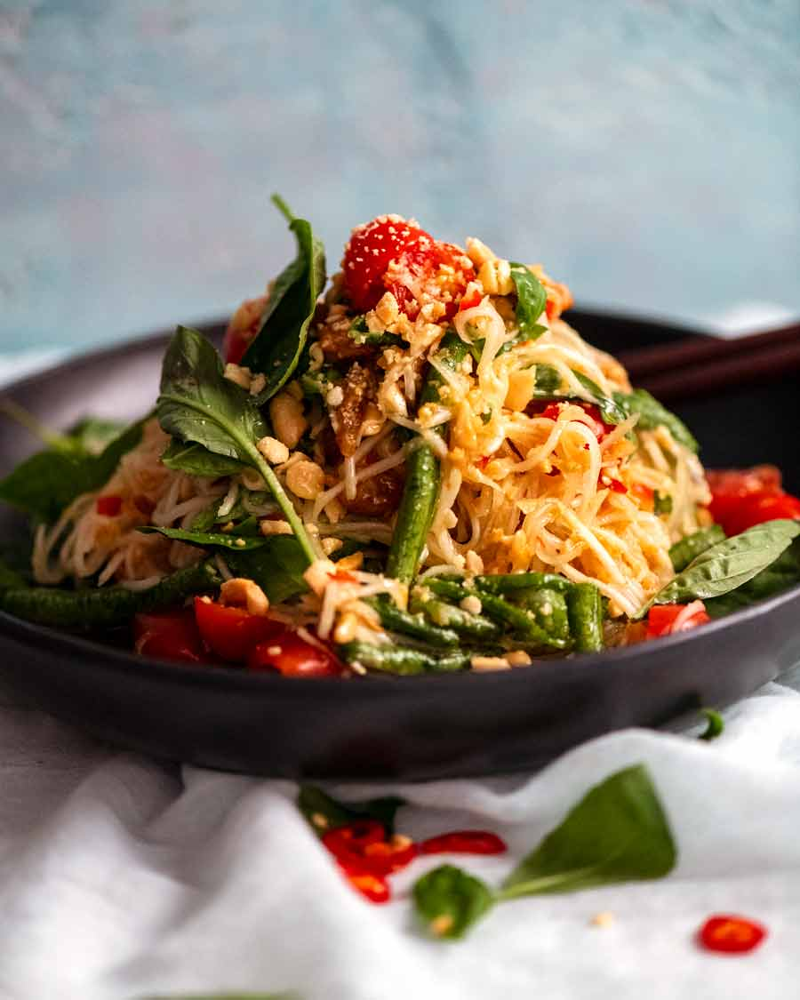

Green Papaya Salad

This Thai salad – called Som Tum – is a riot of fresh colours and crunchy
textures, brought to life with a signature sour-sweet-savoury dressing
spiked with a whack of fresh chilli
This is a salad that’s about as far as you can get from Western salads.
No mayo! No oil in the dressing!
It’s a zingy and spicy cold salad made with green papaya, a fruit which
might be unfamiliar to most Westerners. Green papaya is simply unripened
papaya, and has a juicy and slightly crunchy texture with a neutral taste.
More on green papaya below, including a surprise substitution option!
When shredded, flavour clings to the green papaya. The tangle of threads
becomes the perfect vehicle for carrying the kaleidoscope of tastes in the
dressing: sweetness from palm sugar, salty savouriness from the fish sauce
and dried shrimp, fresh tang from lime, and fiery pungency from a generous
one-two punch of garlic and chilli.
Ingredients
- 2 tbsp garlic
- 6 bird eye chillies
- 6 tbsp dried shrimp
- 150 g palm sugar
- 125 ml lime juice
- 125 ml fish sauce
- 1 cup roasted peanuts
- 20 snake beans
- 3 cups grape tomato
- 500g / 4 cups green papaya
- 1/2 cup Thai basil leave
Steps
-
Crush peanuts: Place peanuts in a mortar and pestle. Pound lightly to
break them up into largish pieces, not into powder. Transfer to bowl.
-
Garlic and chilli paste: Place garlic and chilli in the mortar. Pound
into a paste. Add shrimp and pound to crush them – no need to grind them
to a paste.
-
Dressing: Stir in palm sugar, lime and fish sauce until sugar dissolves.
Pour Dressing into a large bowl.
-
Bruise snake beans: Add snake beans to mortar (in batches if needed).
Pound to bruise, split and soften (they are raw, so they need to be
bashed to soften). Add to Dressing.
-
Crush tomato: Grab handfuls of tomato, crush with your hands then add
into the bowl.
-
Add papaya: Add papaya and 3/4 of the peanuts. Toss well with 2 wooden
spoons or tongs.
-
Serve immediately: Once everything is coated in Dressing, immediately
pile up onto plates. Spoon over some dressing (there will be a bit of
dressing still left in the bowl, that's normal). Garnish with Thai basil
leaves, sprinkle with remaining peanuts. Serve immediately.